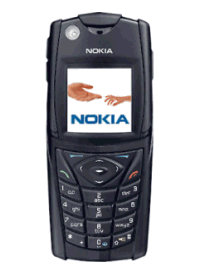
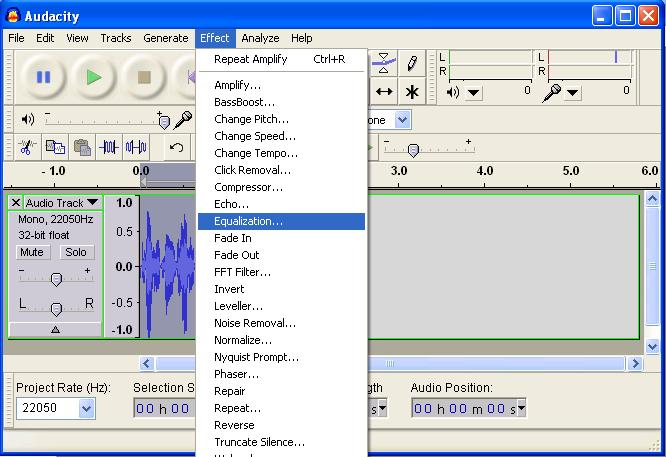
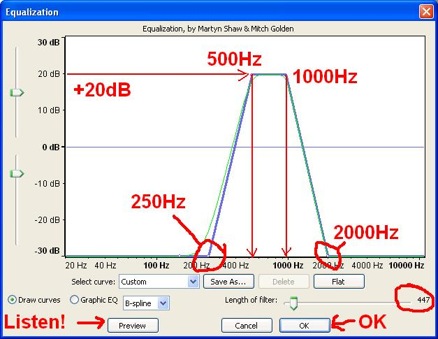
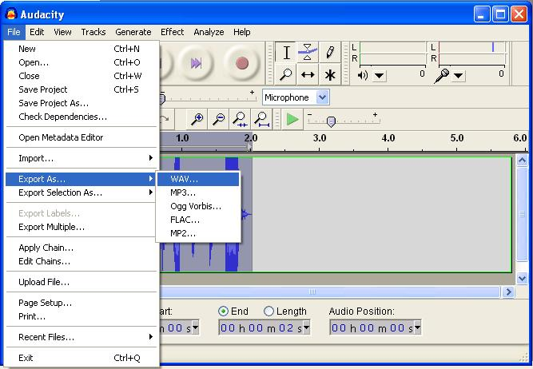

Soaring with FSX >> radio sounds
There's a couple of basic techniques one using a mobile phone, the other using Audacity software.
|  |
|
|
Record a voice 'memo' on your mobile phone.
Open 'Accessories/Entertainment/Sound Recorder' on your PC and play the mobile phone recording into your PC microphone.
save the file following these instructions
Download the Audacity sound editor from here:
http://audacity.sourceforge.net/
Install and then open the application. For FSX, set the 'Project rate' to 22050Hz.

Record your sound. After you've recorded it click the 'play' button to see how good you sound. If you can't work out which is the 'Play' button don't bother reading the rest of this tutorial.

Trim off the entry and exit quiet bits of your recording by dragging the 'I-beam' tool across the section of the audio you want to remove, and hitting the delete key.

Here's a link to a sample recording we'll modify.
Type 'Control+A' to select the whole audio track (or drag the I-beam across it, or use the 'Edit..Select..All' menu). We are going to use a couple of 'Effect's, and these only apply to the selected portion of the track. If no region of the track is selected the whole 'Effect' menu is grayed-out which can be damn confusing. We're going to amplify the track to the point at which it just starts clipping, so select the 'Amplify' effect.

Here's a part requiring a bit of finess... leave the 'Allow clipping' checkbox unchecked, slide the slider to the right until the 'OK' button just grays-out. The OK button has grayed-out because clipping has just occurred at the amplification you've selected. Then check the 'Allow clipping' checkbox, and the 'OK' button will magically re-appear (well, stop being grayed-out anyway). Click 'OK'.

If you look at your track now you should see it 'clipped' at some point. It would be useful to check
the full audio track is still 'selected' because we're going to apply another 'Effect'. You can replay the
track at any time (click the play button). So far it should still sound clean but a bit louder than before.

Now our sample sounds like this.
Select the 'Equalization' effect.
The exact settings needed will depend on your voice and the setup of your microphone. These are a good guide but you can spend hours tweaking them about for ever diminishing returns and go back to the settings you first thought of. The principle is simply to emulate a typical airband radio by cutting off the low and high frequencies, and boosting the bit you've got left (250Hz to 2000Hz in this example) so that it 'clips' fairly hard. 
Now our sample sounds like this.
The hard work is now done. Before you save the WAV file, change the sample format to 16 bit. I think this saves space for FSX. Maybe.

Select 'File'... 'Export'... 'WAV' and you should see a file-save dialog you recognise.
When your mission is completed, it is worth opening each of your sound files and then saving in Sound Recorder as described below. This will reduce the file sizes by up to a factor of 10.
Note: Sound Recorder will not work on PC's with more than 2GB of memory.
If your not in it already, the small Sound Recorder application can be found on the Start Programs menu under Accessories/Entertainment.
Either open an existing WAV file using Sound Recorder, or click 'Record' to record a new WAV file.
Click the File/Save As... menu option:

Before you click the 'Save' button, click the 'Change...' button at the bottom of the dialog window and select Format: 'Microsoft ADPCM'. With a bit of luck the 'Attributes:' box will default to 8kHz, 4bit, mono, as in the image below, but if not just select that.

Click 'OK' in the Sound Selection dialog (picture above), and then enter a filename and click 'Save' in the 'Save As...' dialog window.
Brought to you by B21